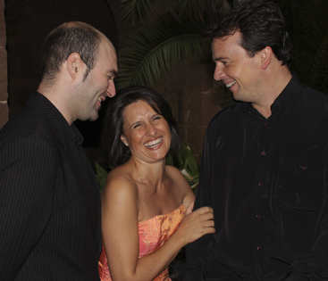

TRIO BONANOVA
M. Teresa Vert, soprano.
Gabriel Blanco, tenor.
Daniel Garcia, piano.
Proponen:
Se trata de un recital lírico de gala que ofrece los pasajes más virtuosos y emotivos del repertorio operístico. Muy adecuado para público amplio y grandes ocasiones.
Asimismo, tienen también un selecto programa de zarzuela con títulos tan conocidos como El barberillo de Lavapiés, La tabernera del puerto, Canción de amor y de guerra, entre otros.
Programa: Òpera a mida
VERDI
- La traviata
GOUNOD
- Romeo i Juliette
BIZET
- Carmen
PUCCINI
- La Bohéme